| 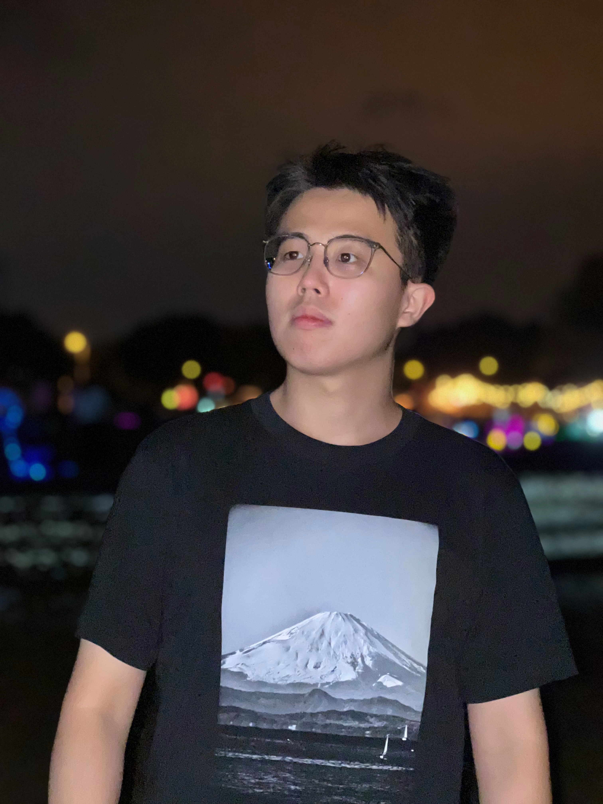 | WANG, Ze Dong 王泽栋 |
Short Bio
News
- [2025.04.04] Co-authored paper on unified visual generation&representation, MergeVQ, is accepted at CVPR 2025, ranking 1st in 🤗Hugging Face Daily Papers, and ranking 4th in Weekly Papers. Congrats to all co-authors!
- [2024.12.12] Co-authored paper on low-level vision, PGHHNet, is accepted at AAAI 2025. Congrats to all co-authors!
- [2024.11.04] I am recognized as an Outstanding Reviewer at BMVC 2024 (rate: 19.3%, 166/860). Happy to contribute to the community! Huge thanks to the BMVC organizers for their dedication.
- [2024.11.04] I am recognized as an Outstanding Reviewer at ACM MM 2024 (rate: 139/X). Happy to contribute to the community! Huge thanks to the ACM MM organizers for their dedication.
- [2024.10.10] One paper on vision backbones & optimizers, BOCB, is released. Welcome to visit Hugging Face and Project page.
- [2024.09.24] I am recognized as an Outstanding Reviewer at ECCV 2024 (rate: 2.7%, 198/7293). Happy to contribute to the community! Huge thanks to the ECCV organizers for their dedication.
- [2024.07.14] Maintain an open-source repository on optimizers, Awesome-Optimizers, with Juanxi Tian and Siyuan Li.
- [2024.05.02] One paper on AI4Science (genomics), VQDNA, is accepted at ICML 2024.
- [2024.05.02] One co-authored paper on long sequence modeling, CHELA, is accepted at ICML 2024. Congrats to Zicheng Liu!
- [2024.04.16] One co-authored paper on long sequence modeling, LongVQ, is accepted at IJCAI 2024. Congrats to Zicheng Liu!
- [2024.01.16] One paper on vision backbone, MogaNet, is accepted at ICLR 2024. Code & weights (180 stars) are released!
- [2024.01.16] One co-authored paper on semi-sup learning, SemiReward, is accepted at ICLR 2024. Congrats to Siyuan Li!
- [2024.01.09] I am invited to serve as an emergency reviewer at ICLR 2024 (TinyPapers). It will be held in Vienna, Austria.
- [2023.12.31] One co-authored preprint on self-supervised learning, Masked Modeling on Vision and Beyond.
- [2023.09.31] One co-authored paper on video prediction, OpenSTL, is accepted at NeurIPS 2023. Congrats to Cheng Tan!
- [2023.06.25] Got my B.Eng. degree from Huazhong University of Science and Technology (HUST)! Special thanks to my undergraduate supervisor Prof. Xinggang Wang for the generous support!
- [2023.05.23] One preprint on data augmentation, SAMix, is presented for both SL & SSL scenarios.
- [2022.11.07] One preprint on vision backbone, MogaNet. A new family of pure convolutional architecture covering 5M~100M+ model scales with great performance. Code & weights are released (180 stars). Welcome to discuss, use, and star!
- [2022.09.11] One preprint on data augmentation, OpenMixup, is presented for vision tasks. This is also my first arXiv paper!
- [2022.09.11] Maintain an open-source repository, OpenMixup (618 stars), for both supervised, semi- and self-supervised visual representation learning based on PyTorch. On updating!
- [2022.07.06] Fortunate to become visiting student at Westlake University, under the supervision of Chair Prof. Stan Z. Li.
- [2021.09.01] Fortunate to become research intern in HUST Vision Lab, under the supervision of Prof. Xinggang Wang.
- [2021.06.01] Fortunate to become research intern in SIAT-MMLab at Shenzhen Institute of Advanced Technology, CAS.
Research Interests
Currently, I focus mostly on Computer Vision, efficient Multi-task and Multi-modal Learning, including (but not limited to):- Data-efficient Learning: Mixup Augmentation [OpenMixup, SAMix], Semi-supervised Learning [SemiReward].
- Efficient Network Architectures: Vision Backbones [MogaNet], Multi-task Architectures [MergeVQ].
- Optimization Techniques: Optimizers [SEMA, BOCB], Multi-task Optimization.
Education
 The Hong Kong University of Science and Technology (2025-now)
The Hong Kong University of Science and Technology (2025-now)
• Ph.D. in Computer Science and Engineering.
• Topics: Multi-task and Multi-modal Learning.
• Supervisor: Prof. Dan Xu.
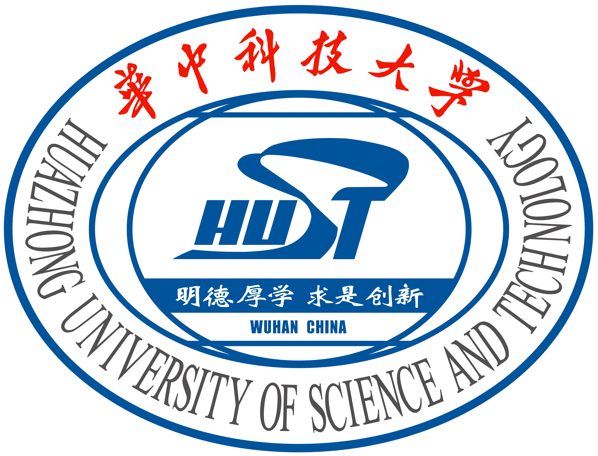
Huazhong University of Science and Technology (2019-2023)
• B.Eng. in Electronic and Information Engineering.
• Thesis: Efficient ConvNet-based Vision Backbone for Multiple Tasks (Grade: 92/100).
• Supervisor: Prof. Xinggang Wang.
Research Experience
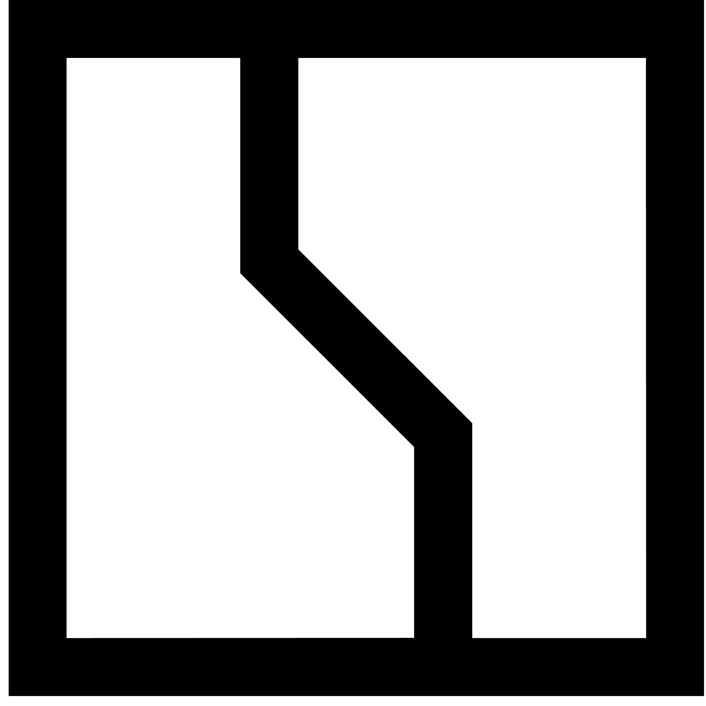
ZEEKR Intelligent Technology (2024.04-2025.01)
• Topics: Multi-task Optimization.
• Advisor: Prof. Dan Xu (University-Enterprise Cooperation).
Stan Z. Li's AI Lab, Westlake University (2022.06-2024.03)
• Topics: Visual Representation Learning and AI for Science.
• Advisor: Chair Prof. Stan Z. Li (IEEE Fellow, IAPR Fellow).
Xinggang Wang's Vision Group, HUST (2021.09-2022.06)
• Topics: Few-shot Semantic Segmentation.
• Advisor: Prof. Xinggang Wang.
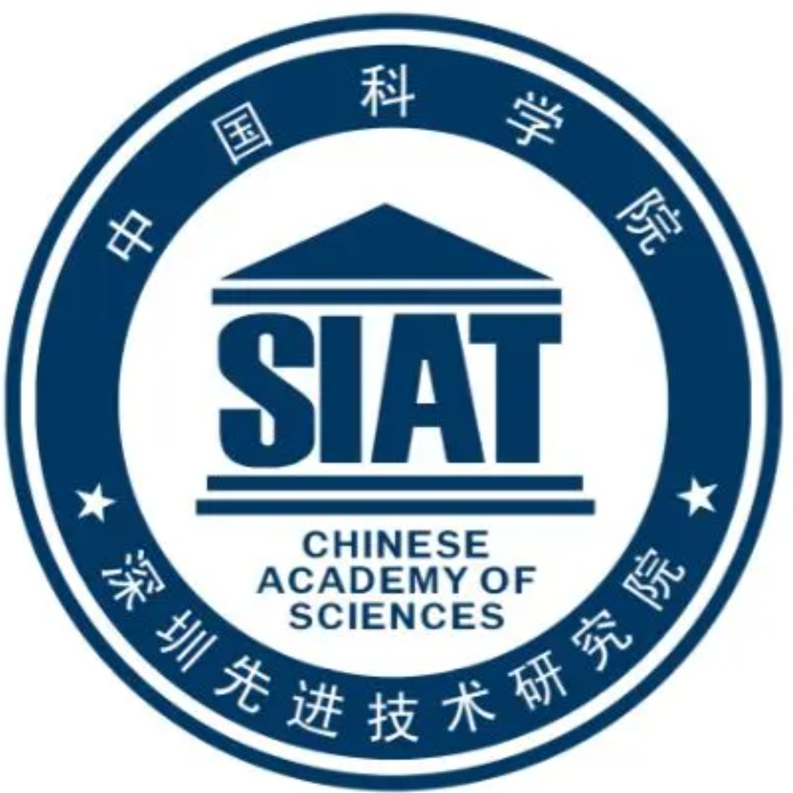
SIAT-MMLab, Chinese Academy of Sciences (2021.06-2021.09)
• Topics: Semantic Segmentation and Text Spotting.
• Advisor: Dr. Bin Fu.
Publications
Selected Preprints (*: Equal Contribution. †: Corresponding Author.):
| 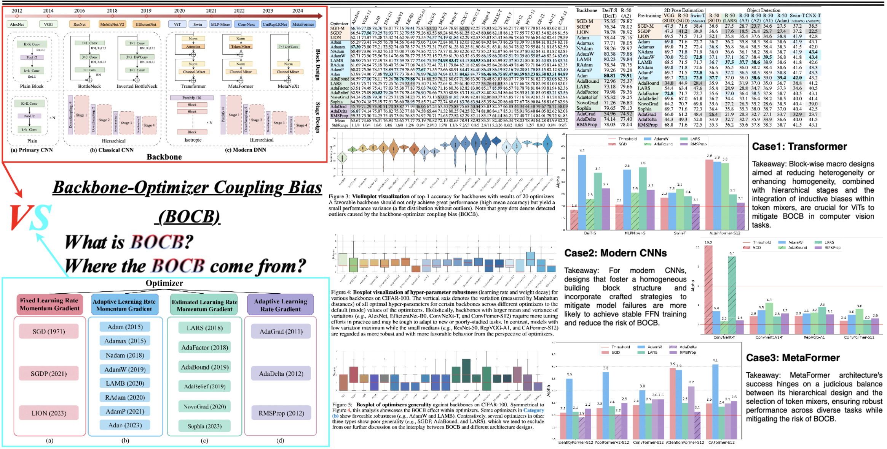 |
[NEW!] Unveiling the Backbone-Optimizer Coupling Bias in Visual Representation Learning |
 |
Switch EMA: A Free Lunch for Better Flatness and Sharpness |
| 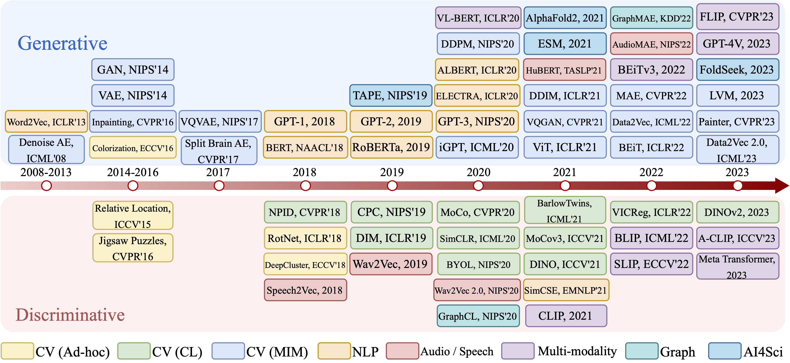 |
Masked Modeling for Self-supervised Representation Learning on Vision and Beyond |
Conferences (As First Author):
| 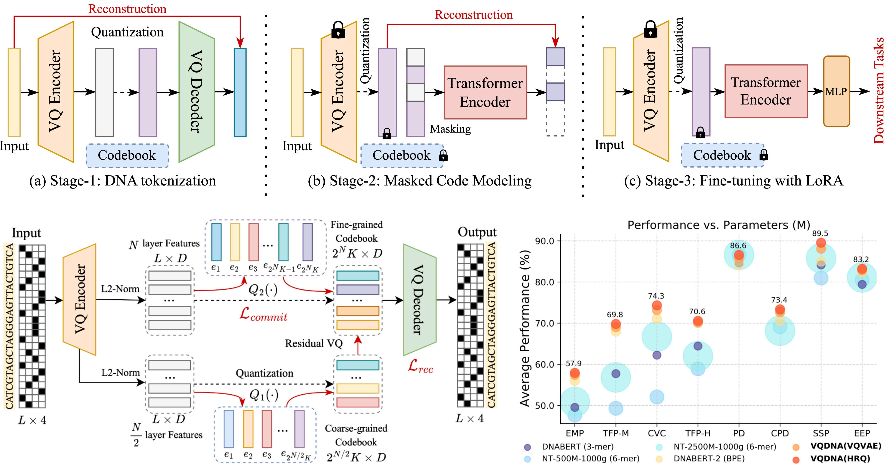 |
VQDNA: Unleashing the Power of Vector Quantization for Multi-Species Genomic Sequence Modeling |
| 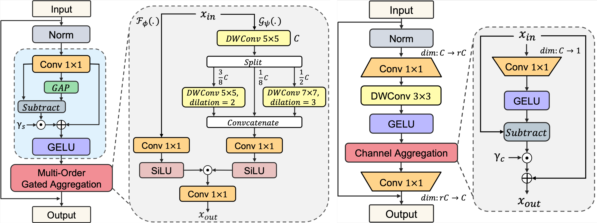 |
MogaNet: Multi-order Gated Aggregation Network |
Conferences (As Co-author):
| 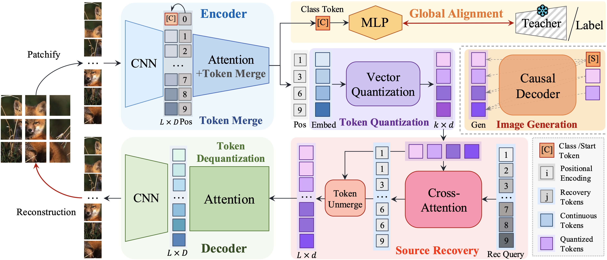 |
[NEW!]MergeVQ: A Unified Framework for Visual Generation and Representation with Disentangled Token Merging and Quantization |
| 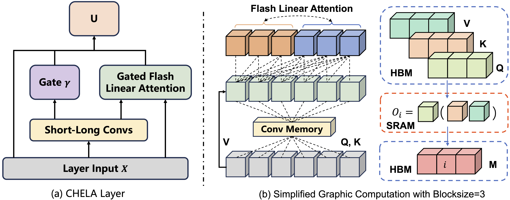 |
Short-Long Convolutions Help Hardware-Efficient Linear Attention to Focus on Long Sequences |
| 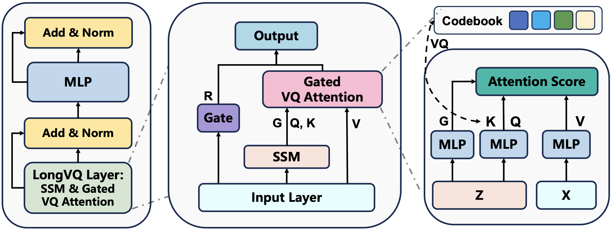 |
LongVQ: Long Sequence Modeling with Vector Quantization on Structured Memory |
| 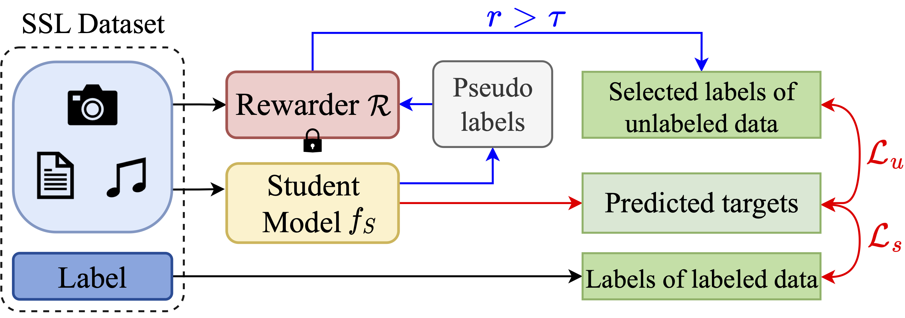 |
SemiReward: A General Reward Model for Semi-supervised Learning |
 |
OpenSTL: A Comprehensive Benchmark of Spatio-Temporal Predictive Learning |
Professional Services
Conference Reviewer/PC Member:
- IEEE/CVF Conference on Computer Vision and Pattern Recognition (CVPR), 2025
- IEEE/CVF International Conference on Computer Vision (ICCV), 2025
- European Conference on Computer Vision (ECCV), 2024
- International Conference on Learning Representations (ICLR), 2024 (TinyPapers), 2025
- International Conference on Machine Learning (ICML), 2024, 2025
- Conference on Neural Information Processing Systems (NeurIPS), 2024 (D&B Track), 2025
- AAAI Conference on Artificial Intelligence (AAAI), 2025
- ACM International Conference on Multimedia (ACM MM), 2024
- BMVA The British Machine Vision Conference (BMVC), 2024
- IAPR International Conference on Pattern Recognition (ICPR), 2024
Journal Reviewer:
- IEEE Transactions on Knowledge and Data Engineering (TKDE)
Membership:
- China Computer Federation (CCF), Student Member, 2024-2026
- China Society of Image and Graphics (CSIG), Student Member, 2023
Selected Awards and Honors
- Outstanding/Top Reviewer Award, at ECCV 2024 (2.7%, 198/7293), ACM MM 2024 (139/X), and BMVC 2024 (19.3%, 166/860).
- Westlake University Summer Studentship (2/100+), selected by Stan Z. Li's AI Lab, 2022.
Acknowledgement
My research career cannot be possible without the support from all my awesome mentors, collaborators, and friends:- Prof. Xinggang Wang, Prof. Yu Zhou at HUST.
- Chair Prof. Stan Z. Li, Dr. Siyuan Li, Dr. Zicheng Liu, Dr. Haitao Lin, Dr. Jiangbin Zheng, Mr. Siqi Ma at Westlake University.
- Prof. Dan Xu, Dr. Zhenxing Mi, Dr. Yuxin Wang, Mr. Yucheng Wang, Mr. Yiwei Chen at HKUST.
- Mr. Aozhong Zhang at SUNY Albany.
- Mr. Juanxi Tian at HKBU.
Beyond academia, I feel incredibly fortunate to met wonderful friends and partners along the way (particularly during my middle school and high school years in Shenzhen). To every one of you who has walked through different chapters of my life: I appreciate all your presence and support, and carry deep gratitude for our shared moments. Whether we are still in touch or not, I wish you all the best!
Even if most of you may never visit this page, please know my door is always open for a chat - coffee's on me!